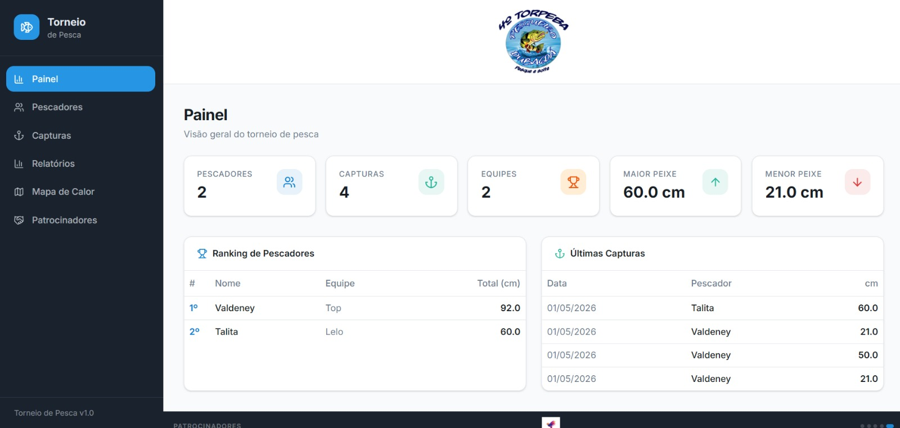
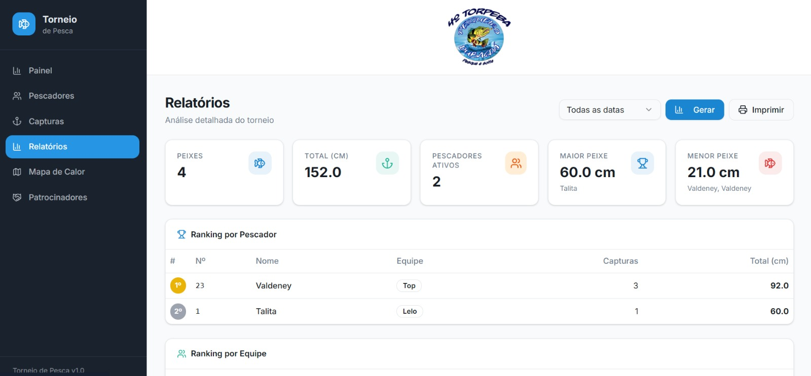
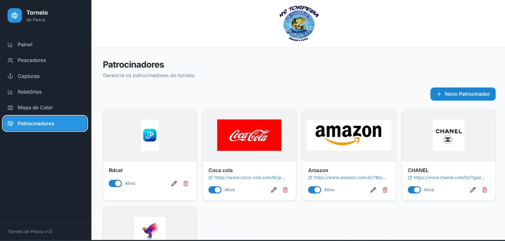

Controle Total, em Qualquer Dispositivo
Do painel administrativo no PC à palma da mão dos fiscais no app.
Painel Administrativo Web



Esqueça as planilhas manuais. O PesqueiroPro automatiza rankings, gera mapas de calor e gerencia capturas em tempo real com máxima intuitividade.
No Pesqueiro Dubagda, o sistema gerenciou com precisão todas as capturas, aplicando automaticamente a regra de desempate por tamanho e a soma dos 5 maiores peixes por equipe.

Confira os melhores momentos e a agilidade na gestão das capturas com o Torpeba.
Tecnologia de ponta para garantir a transparência e a emoção de cada fisgada.
Lógica inteligente que soma automaticamente apenas os 5 maiores peixes de cada equipe, mantendo a competitividade em alto nível até o último minuto.
Transparência total: o sistema exibe todos os pescadores com medidas idênticas (ex: 19,5 cm), permitindo auditoria rápida e critérios de desempate técnicos.
Monitore a localização exata de cada captura para garantir a integridade e identificar os pontos mais produtivos.
Licenciamento por licença única. Invista na tecnologia apenas quando houver competição.
Do painel administrativo no PC à palma da mão dos fiscais no app.
Painel Administrativo Web


Sua marca em destaque para milhares de pescadores esportivos.